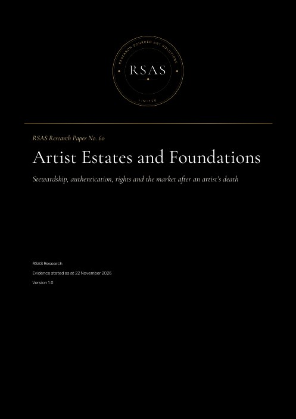
No. 60 · Law, regulation and tax · 23 pagesArtist Estates and Foundations
Stewardship, authentication, rights and the market after an artist’s death
When an artist dies, the work passes to heirs, executors, foundations and the galleries they appoint, who decide how many works are sold, which are authentic, who may reproduce images and how the artist is remembered. In the United States, assets of artist-endowed foundations more than doubled between 2011 and 2015, to $7.66 billion. This paper explains how estates are structured in the US, the UK and Spain, the lessons of the Rothko case, how galleries compete to represent estates, and why authentication boards have closed while catalogues raisonnés became a legal battleground. It covers posthumous casts, copyright, resale and image rights, blockage discounts, and practical checks for collectors.
Related InsightsNo. 25, Selling Inherited Art: A Guide for Executors and Families
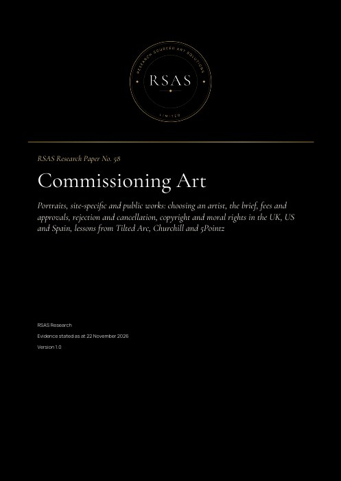
No. 58 · Collecting in practice · 22 pagesCommissioning Art
Portraits, site-specific and public works: choosing an artist, the brief, fees and approvals, rejection and cancellation, copyright and moral rights in the UK, US and Spain, lessons from Tilted Arc, Churchill and 5Pointz
Commissioning a portrait, a garden sculpture or a work for a particular room lets a collector take part in making the work rather than choosing from what already exists. It is also more complex than buying, because the commissioner pays for something that does not yet exist. Most problems arise from misunderstandings that a written agreement would have prevented. Under UK law the artist usually keeps the copyright, and moral rights can be waived in the UK but not in Spain. This paper explains the types of commission, choosing an artist and writing a brief, the key terms of an agreement, and lessons from disputes including Tilted Arc, Sutherland’s Churchill and 5Pointz.
Related InsightsNo. 29, Commissioning a Work from a Living Artist
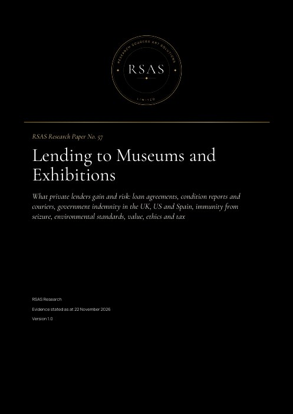
No. 57 · Collecting in practice · 23 pagesLending to Museums and Exhibitions
What private lenders gain and risk: loan agreements, condition reports and couriers, government indemnity in the UK, US and Spain, immunity from seizure, environmental standards, value, ethics and tax
Private collectors are among museums’ most important lenders, and a loan can add to a work’s exhibition history, contribute to scholarship and pass the costs of care to the borrower while the work is away. Loans also carry risks: damage in transit or on display, long absences on tour, scrutiny and publication of provenance, and legal exposure abroad, as the seizure of Schiele’s Portrait of Wally in New York in 1999 showed. This paper explains how lending works, the main terms of a loan agreement, insurance and government indemnity in the UK, the US and Spain, immunity from seizure, handling standards, effects on value and tax points, and closes with a checklist.
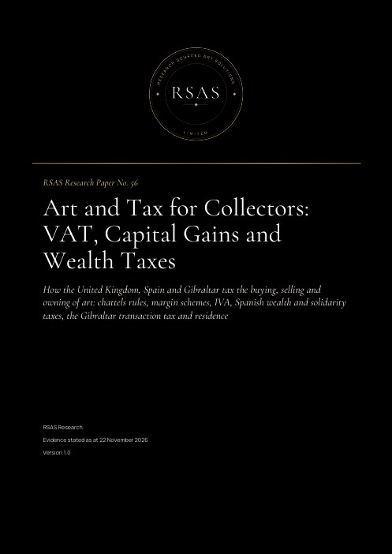
No. 56 · Law, regulation and tax · 24 pagesArt and Tax for Collectors
How the United Kingdom, Spain and Gibraltar tax the buying, selling and owning of art: chattels rules, margin schemes, IVA, Spanish wealth and solidarity taxes, the Gibraltar transaction tax and residence
Collectors pay tax on art when they buy, through VAT or its equivalents; when they sell or give at a gain, through capital gains tax; and in some countries simply for owning it, through a wealth tax. The rules differ sharply between the United Kingdom, Spain and Gibraltar. The UK taxes gains under special rules for chattels and has no wealth tax; Spain taxes gains at up to 30 per cent, levies a wealth tax with exemptions for art and charges IVA; Gibraltar has none of these but introduced a transaction tax in 2026. This paper explains why residence and the location of works matter most, with practical points and illustrations.
Related InsightsNo. 06, The Real Cost of Owning Art: Premiums, Insurance, Storage and Tax
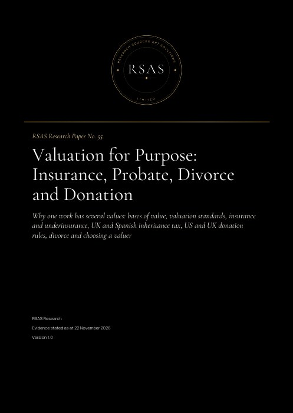
No. 55 · Value, pricing and markets · 23 pagesValuation for Purpose
Why one work has several values: bases of value, valuation standards, insurance and underinsurance, UK and Spanish inheritance tax, US and UK donation rules, divorce and choosing a valuer
A work of art does not have a single value; the purpose of a valuation decides which value is right. An insurance valuation asks what replacement would cost, a probate valuation what the work would fetch in the open market at death, a US charitable valuation its fair market value under tax rules, and a divorce valuation a figure a court can rely on. Using the wrong one can be expensive: an insurance figure may overstate value for inheritance tax, and underinsurance can reduce a claim. This paper explains the main bases of value, the standards valuers work to, and the rules for insurance, probate, donation and divorce in the UK, the US, Spain and Gibraltar.
Related InsightsNo. 26, Valuations Explained: Insurance, Probate and Market Value
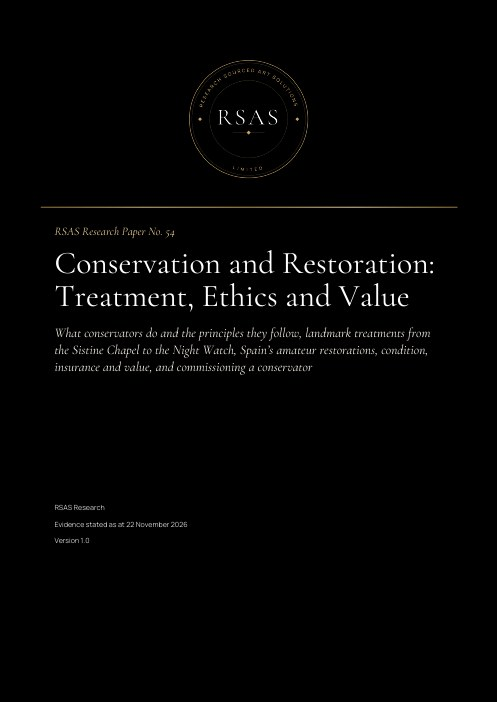
No. 54 · Condition, care and risk · 22 pagesConservation and Restoration
What conservators do and the principles they follow, landmark treatments from the Sistine Chapel to the Night Watch, Spain’s amateur restorations, condition, insurance and value, and commissioning a conservator
Almost every old work of art has been cleaned, repaired or retouched at some point, sometimes skilfully and sometimes not, and that history affects both how a work looks and what it is worth. This paper explains what conservation and restoration involve and the ethical principles professional conservators follow. It draws on major treatments of recent decades, from the Ghent Altarpiece and the Night Watch to the Sistine Chapel ceiling, Barnett Newman’s disputed Who’s Afraid of Red, Yellow and Blue III and the Salvator Mundi, as well as amateur restorations in Spain. Its practical lessons are to choose an accredited conservator, agree a written proposal, and keep full documentation with the work.
Related InsightsNo. 15, Preparing a Work for Sale: Condition, Paperwork and Timing
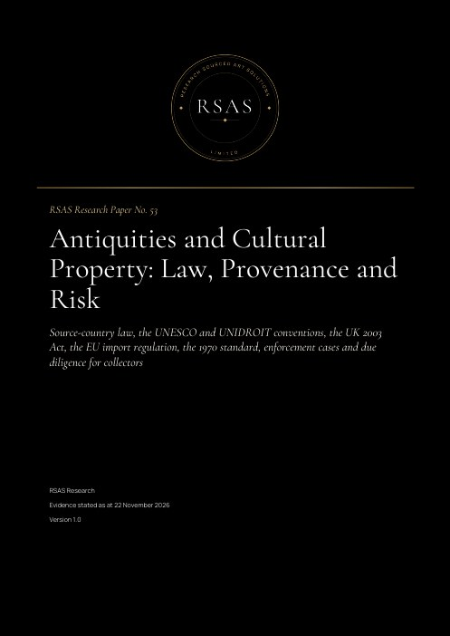
No. 53 · Law, regulation and tax · 23 pagesAntiquities and Cultural Property
Source-country law, the UNESCO and UNIDROIT conventions, the UK 2003 Act, the EU import regulation, the 1970 standard, enforcement cases and due diligence for collectors
Antiquities are among the most beautiful and the most legally hazardous objects a collector can buy. A Roman head or Greek vase may have a long and respectable history, or may have been dug up illegally a few decades ago and given a false one, and only documents tell them apart. This paper explains how the legal climate has tightened, from the Manhattan District Attorney’s recovery of more than 6,000 antiquities and the Steinhardt surrender to new EU import rules and UK criminal law. It sets out the 1970 standard now applied by museums and the better trade, gives particular attention to Spanish heritage law, and explains the steps to take before buying, moving or selling.
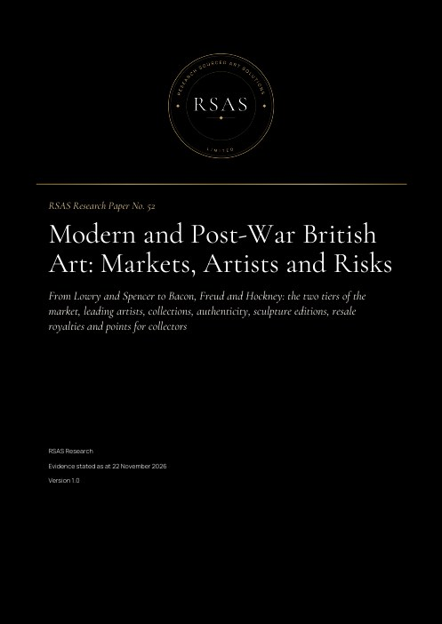
No. 52 · Collecting fields and regions · 23 pagesModern and Post-War British Art
From Lowry and Spencer to Bacon, Freud and Hockney: the two tiers of the market, leading artists, collections, authenticity, sculpture editions, resale royalties and points for collectors
Modern and Post-War British art runs from the Camden Town painters and Vorticists to St Ives, the Scottish Colourists, Moore, Hepworth, Lowry and the School of London. It is a market of two halves: Bacon, Freud and Hockney sell in international evening sales for tens of millions, while most others trade in specialist sales at far lower levels. This paper reviews a strong 2026, including the £296.3 million Joe Lewis sale and new records for Henry Moore and Leon Kossoff, set against weaker specialist sales. It explains how the market is organised, what drives prices for leading artists, where authenticity and edition questions arise, and the tax and resale-royalty rules.
 No. 51 · Collecting fields and regions · 25 pages
No. 51 · Collecting fields and regions · 25 pagesImpressionist and Modern Art
How the market for Monet to Magritte works: size and share, history, supply, guarantees, artists’ markets, attribution, restitution, condition and points for collectors
Impressionist and Modern art, made between about 1870 and 1950, is the oldest of the great blue-chip markets and still one of the deepest, with names from Monet and Van Gogh to Picasso and Magritte. After three difficult years it recovered in 2025, though the recovery rested on a few exceptional works, above all the Lauder sale, where Klimt’s Portrait of Elisabeth Lederer made $236.4 million. This paper explains how the market works and what drives prices at the top and in the middle. It shows why finite supply, auction guarantees and single-owner estates shape results, and why authenticity, provenance and condition carry exceptional weight. It ends with practical points for collectors.
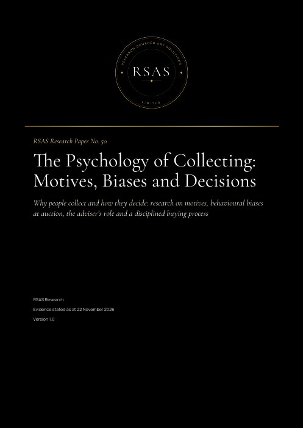
No. 50 · Collecting in practice · 16 pagesThe Psychology of Collecting
Why people collect and how they decide: research on motives, behavioural biases at auction, the adviser’s role and a disciplined buying process
Collectors are not the rational investors of economic textbooks. They buy for love, identity, status and memory as well as for money, and they decide in conditions that test anyone’s judgement: unique objects, uncertain values, competitive auctions and time pressure. Drawing on consumer psychology and behavioural economics, this paper explains how collectors decide and where their decisions go wrong. It shows how motives are shifting, with fewer collectors combining passion and investment, and describes biases documented in auction research, including anchoring, reluctance to sell at a loss and auction fever. It ends with a disciplined decision framework, from setting a walk-away price to reviewing decisions afterwards.
Related InsightsNo. 70, Behavioural Biases When Buying Art: Anchoring, the Winner's Curse and More
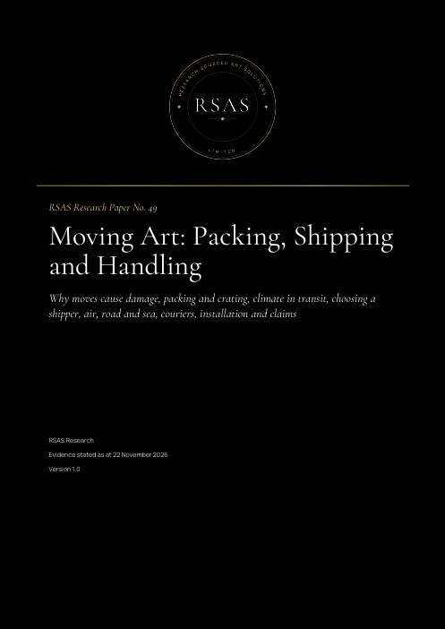
No. 49 · Condition, care and risk · 17 pagesMoving Art
Why moves cause damage, packing and crating, climate in transit, choosing a shipper, air, road and sea, couriers, installation and claims
A work of art is most at risk when it moves. Insurers and brokers report that transit and handling are the largest source of fine art claims, with one broker attributing about 60 per cent of art damage claims to transport. This paper explains the causes of damage in transit, from shock and vibration to compression, punctures and sudden changes in climate, and how packing and crating reduce each risk, drawing on research by the Canadian Conservation Institute, the Getty and the British Museum. It covers choosing a specialist shipper, air, road and sea, couriers and condition checks, safe installation and hanging, and what to do if damage occurs.
Related InsightsNo. 23, Moving Art Across Borders: Export Licences, Import VAT and ShippingNo. 69, Packing and Crating: How Works of Art Are Protected in Transit
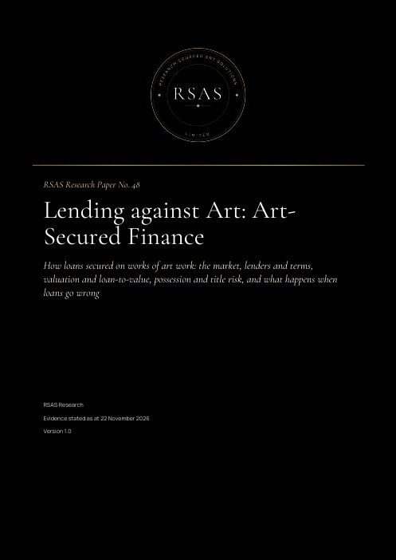
No. 48 · Value, pricing and markets · 17 pagesLending against Art
How loans secured on works of art work: the market, lenders and terms, valuation and loan-to-value, possession and title risk, and what happens when loans go wrong
Works of art can secure loans much as a house secures a mortgage, and art-secured lending has become a substantial market, with loans outstanding estimated at $33.9 billion to $40 billion in 2025. This paper describes the three main kinds of lender: private banks, auction houses and specialist asset-based lenders. It explains why most lend no more than about half of a work’s appraised value, often on a conservative basis, and sets out the risks of falling values, slow sales and uncertain title. It explains why Victorian legislation complicates borrowing in England while keeping art at home, and what the Inigo Philbrick case shows. RSAS describes such lending but does not recommend or arrange it.
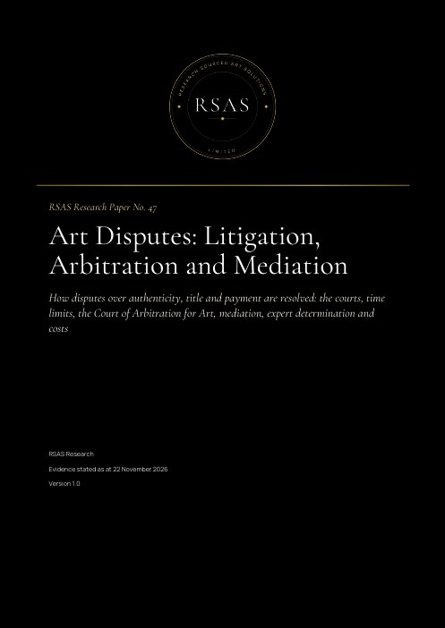
No. 47 · Law, regulation and tax · 17 pagesArt Disputes
How disputes over authenticity, title and payment are resolved: the courts, time limits, the Court of Arbitration for Art, mediation, expert determination and costs
A buyer discovers a fake, a seller is not paid, an heir claims a stolen work, or a collector believes an adviser was negligent. This paper explains how art disputes are resolved and what each route costs in money, time and publicity. It compares the courts, arbitration, mediation and expert determination, and describes art’s own institutions, including the Court of Arbitration for Art in The Hague, WIPO’s art and heritage service and the UK’s Spoliation Advisory Panel. It explains why time limits matter as much as the choice of forum, contrasting the six-year rules in England and Wales with New York’s rule, and gives practical advice on avoiding disputes and choosing a route.
Related InsightsNo. 67, When a Purchase Goes Wrong: Mediation, Arbitration and the Courts
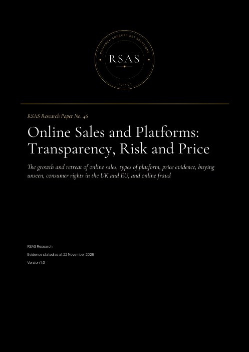
No. 46 · Value, pricing and markets · 17 pagesOnline Sales and Platforms
The growth and retreat of online sales, types of platform, price evidence, buying unseen, consumer rights in the UK and EU, and online fraud
Buying art online has moved from the margins of the market to a permanent, if limited, place in it. Online sales reached a quarter of the market during the pandemic and have since fallen back, to $9.2 billion and 15 per cent of the market in 2025. This paper describes the forms online channels take, from online-only auctions to viewing rooms and marketplaces, and their role in reaching new buyers and lower-priced works. It explains the three distinctive risks of buying unseen, of uncertain consumer rights that depend on the seller and the type of sale, and of fraud, including counterfeit works and intercepted payments. It ends with a checklist for buyers.
Related InsightsNo. 27, Buying Art Online: Viewing Rooms, Online Auctions and Due DiligenceNo. 66, Online Timed Auctions: How They Work and How to Bid Well
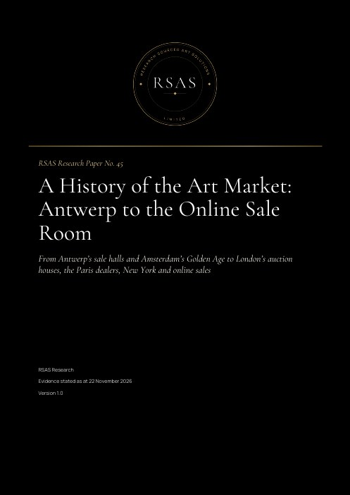
No. 45 · Value, pricing and markets · 17 pagesA History of the Art Market
From Antwerp’s sale halls and Amsterdam’s Golden Age to London’s auction houses, the Paris dealers, New York and online sales
The art market is older than most collectors realise, and many of its features are centuries old. This concise economic history runs from the open market for paintings in fourteenthcentury Venice and the sale halls of sixteenth-century Antwerp to seventeenth-century Amsterdam, where artists produced for an anonymous market on a new scale. It follows the rise of London auctions and the firms that became Sotheby’s and Christie’s, the dealercritic system of nineteenth-century Paris, and Duveen’s transfer of Old Masters to America. It ends with the modern transformation of the auction houses, from the first evening sale in 1958 to the buyer’s premium, Hong Kong and online sales.
Related InsightsNo. 65, A Short History of the Art Market, and Why It Still Matters
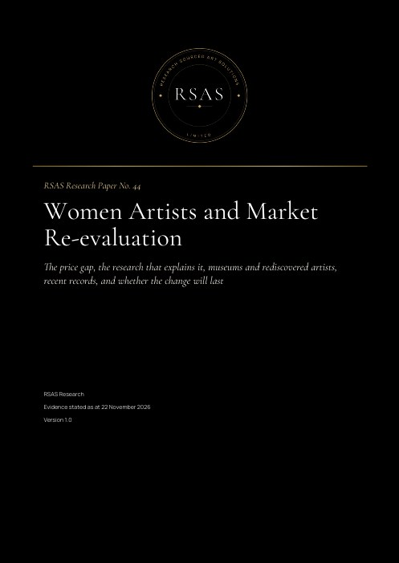
No. 44 · Collecting fields and regions · 17 pagesWomen Artists and Market Re-evaluation
The price gap, the research that explains it, museums and rediscovered artists, recent records, and whether the change will last
Works by women artists have long sold for less than works by men. One study of 1.5 million auction sales found paintings by women sold for 47.6 per cent less on average, and another found women made up just 3.3 per cent of global auction sales between 2008 and 2022. This paper sets out the evidence and the two main explanations: buyers’ valuation of women’s work, and barriers to training, representation and the market. It describes a decade of re-evaluation, with major exhibitions, rediscovered artists such as Artemisia Gentileschi and records for Bourgeois, Carrington, Dumas and Kahlo. It weighs whether the change will last, noting the sharper fall in 2024.
Related InsightsNo. 64, Women Artists and the Market: Re-evaluation and What It Means for Buyers
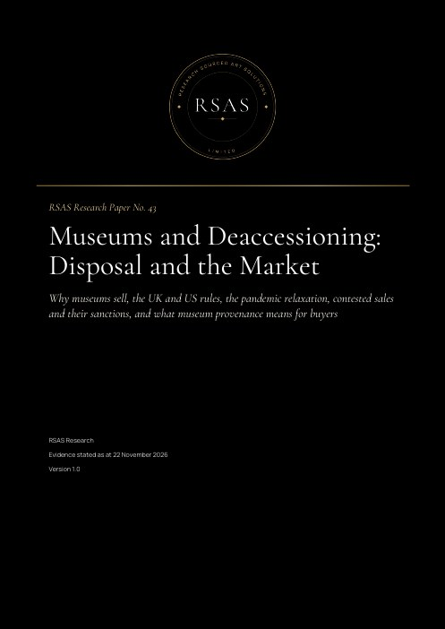
No. 43 · Collecting in practice · 19 pagesMuseums and Deaccessioning
Why museums sell, the UK and US rules, the pandemic relaxation, contested sales and their sanctions, and what museum provenance means for buyers
Museums are the art market’s largest long-term holders, but they do sell, and museum provenance is among the most valued a work can have. In the United Kingdom, the Museums Association’s code and the Accreditation scheme allow sales mainly to raise money only in exceptional cases, and councils in Croydon and Northampton lost accreditation after selling. In the United States, professional rules limit how proceeds are spent but boards have wide legal freedom, and a relaxation during the pandemic prompted a wave of sales. This paper explains why museums hold and sell, the rules in both countries, the contested sales and their sanctions, the effect on prices, and checks for buyers.
Related InsightsNo. 63, When Museums Sell: Deaccessioning and Buying Ex-Museum Works
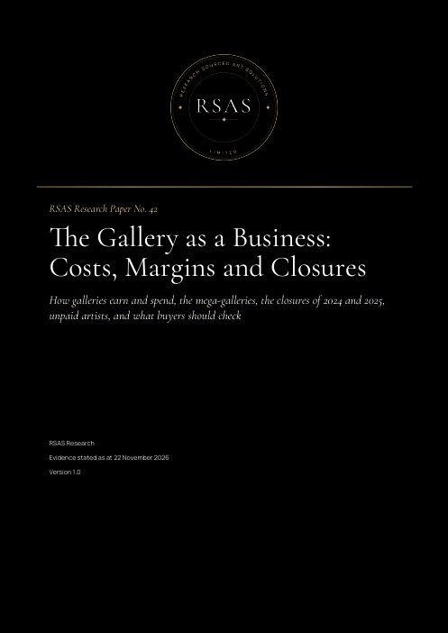
No. 42 · Value, pricing and markets · 16 pagesThe Gallery as a Business
How galleries earn and spend, the mega-galleries, the closures of 2024 and 2025, unpaid artists, and what buyers should check
Commercial galleries find artists, show their work, set their prices and sell to collectors and museums, yet most are small and fragile businesses. They typically take about half of each primary sale and spend most of it on staff, rent and fairs. The years 2024 and 2025 brought prominent closures, from Marlborough to Blum and Kasmin, and several left artists unpaid for works already sold, even as openings still outnumbered closures. This paper explains how a gallery earns and spends money, why the largest galleries operate so differently from the rest, why galleries close and what a closure means for artists and collectors. It ends with practical checks for buyers.
Related InsightsNo. 01, What a Gallery Price Tells You, and What It Does NotNo. 62, When a Gallery Closes: Protecting Yourself as a Buyer
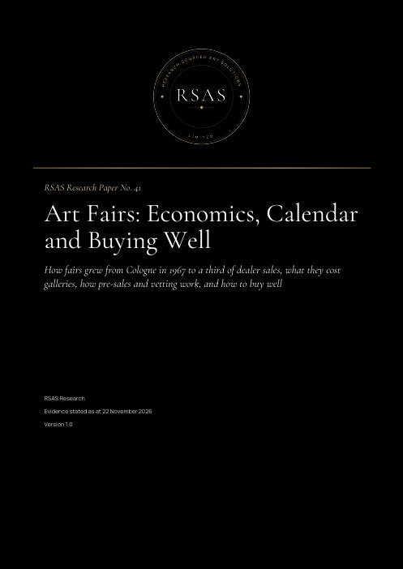
No. 41 · Value, pricing and markets · 17 pagesArt Fairs
How fairs grew from Cologne in 1967 to a third of dealer sales, what they cost galleries, how pre-sales and vetting work, and how to buy well
Art fairs are now the most important place where dealers sell, accounting for 35 per cent of dealer turnover in 2025. From a gathering of German galleries in Cologne in 1967, fairs have become a global calendar of several hundred events, dominated by Art Basel and Frieze. They are expensive for galleries, with a large stand at Art Basel costing close to $200,000 before other costs, and several fairs have closed since 2024 while smaller, cheaper ones have appeared. This paper explains how fairs developed, how their economics work, how pre-sales and vetting operate, and how a private buyer can approach a fair well. It notes that its main data source is published by Art Basel’s owner.
Related InsightsNo. 22, Buying at an Art Fair: A Practical GuideNo. 61, The Art Fair Calendar: Which Fairs Matter, When and Why
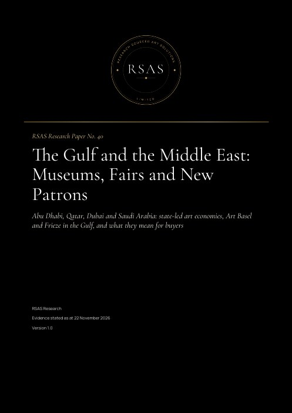
No. 40 · Collecting fields and regions · 18 pagesThe Gulf and the Middle East
Abu Dhabi, Qatar, Dubai and Saudi Arabia: state-led art economies, Art Basel and Frieze in the Gulf, and what they mean for buyers
In twenty years the Gulf states have built one of the most concentrated cultural infrastructures in the world, from the Louvre Abu Dhabi to Qatar’s museum collections and Saudi Arabia’s biennials and auctions. In 2026 Art Basel opened in Doha and Frieze in Abu Dhabi. This activity is largely led by the state, which builds the museums, underwrites the fairs and buys the most important works, while a private market for modern and contemporary Arab art has grown since 2006. This paper explains how the Gulf’s art economies were built and differ, how the regional market fared during the 2026 war involving Iran, and what this means for buyers, without taking a political position.
Related InsightsNo. 60, The Gulf Art Scene: Museums, Fairs and What It Means for Collectors
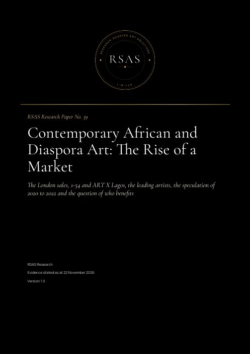
No. 39 · Collecting fields and regions · 19 pagesContemporary African and Diaspora Art
The London sales, 1-54 and ART X Lagos, the leading artists, the speculation of 2020 to 2022 and the question of who benefits
In 2020 a painting by Amoako Boafo, finished only months earlier, sold at Phillips in London for £675,000 against an estimate of £30,000 to £50,000. The episode captured a decade in which contemporary art from Africa and its diaspora moved from the margins of the market to its most heated corner. This paper explains how that market was built, through dedicated auctions, the 1-54 fair, biennials and new institutions such as Zeitz MOCAA. It describes the speculative phase of 2020 to 2022 and the correction that followed, when prices for some young painters collapsed and a major auction house shelved its department, and sets out what buyers should consider.
Related InsightsNo. 59, Contemporary African Art: Fairs, Galleries and Buying With Care
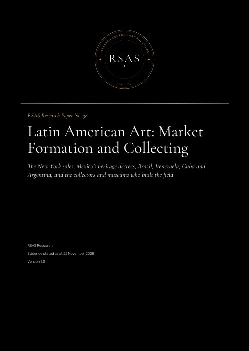
No. 38 · Collecting fields and regions · 20 pagesLatin American Art
The New York sales, Mexico’s heritage decrees, Brazil, Venezuela, Cuba and Argentina, and the collectors and museums who built the field
In November 2025 Frida Kahlo’s El sueño (La cama) sold for $54.7 million, the highest auction price for a work by a woman; in 1980 the same painting made $51,000. The difference reflects the rise of Latin American art from a specialist niche to a central part of the international market. This paper traces that change, from Sotheby’s first dedicated sales in the late 1970s to the folding of the category into the main sales, and the role of collectors such as Eduardo Costantini and Patricia Phelps de Cisneros. It explains Mexico’s heritage laws, the markets for Brazilian, Venezuelan, Cuban and Argentine art, and the particular risks for buyers.
Related InsightsNo. 58, Latin American Art: How the Market Developed and How to Approach It
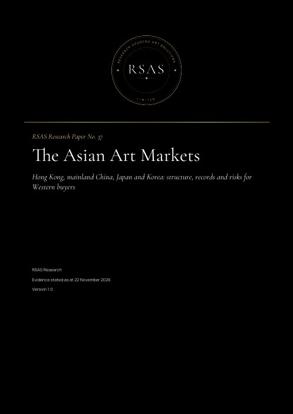
No. 37 · Collecting fields and regions · 20 pagesThe Asian Art Markets
Hong Kong, mainland China, Japan and Korea: structure, records and risks for Western buyers
China is the world’s third-largest art market, with sales of $8.5 billion in 2025, and Japan and South Korea have distinctive markets of their own. This paper explains how the main Asian markets work. Hong Kong is the regional hub for the international auction houses, while mainland China has its own large auction system and a long-standing problem of buyers who do not pay. It looks at the role of Chinese buyers in classical paintings and ceramics, Japan’s domestic market and global names, and Korea’s transformation through the revival of Dansaekhwa. It sets out the particular risks for Western buyers, including authenticity, payment, currency controls and the reliability of published results.
Related InsightsNo. 57, Buying Art in Asia: Hong Kong, Seoul and Tokyo for UK Collectors
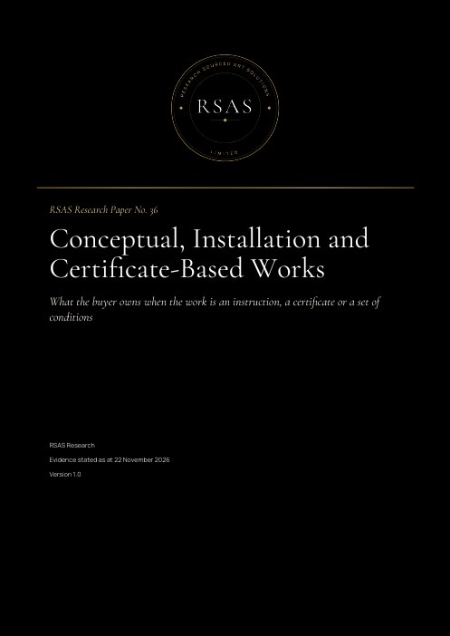
No. 36 · Collecting fields and regions · 20 pagesConceptual and Certificate-Based Works
What the buyer owns when the work is an instruction, a certificate or a set of conditions
In 2024 a collector paid $6.2 million for Maurizio Cattelan’s Comedian, a banana taped to a wall. The banana could be replaced; what the buyer acquired was a certificate and the artist’s instructions. Since the 1960s many artists have made works that exist as instructions, ideas or arrangements of ordinary materials, from Sol LeWitt’s wall drawings to Dan Flavin’s fluorescent lights and Tino Sehgal’s unwritten sales. This paper explains the certificate as evidence of ownership and authenticity, the problems that arise when works are remade or certificates lost, and disputes involving LeWitt, Flavin, Judd and Cady Noland. It sets out relevant UK moral rights and points for buyers.
Related InsightsNo. 21, Certificates of Authenticity: What They Prove and What They Do NotNo. 56, Buying Conceptual and Installation Art: When the Work Is a Set of Instructions
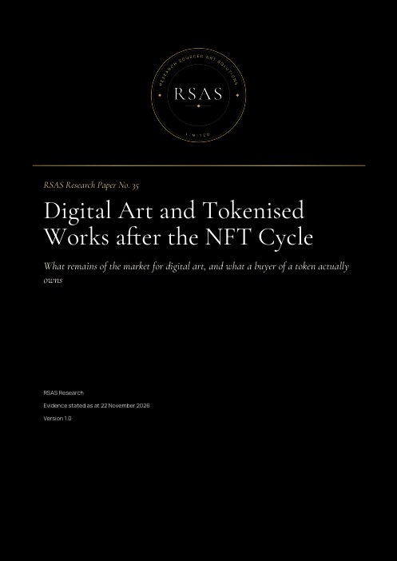
No. 35 · Collecting fields and regions · 22 pagesDigital Art and Tokenised Works
What remains of the market for digital art, and what a buyer of a token actually owns
In 2021 a digital collage by Beeple sold at Christie’s for $69.3 million as a non-fungible token. Within three years most NFT trading had gone, yet digital art survived: major museums have acquired blockchain-based works and generative art has found serious collectors. This paper explains what remains after the speculative cycle and what the buyer of a token actually owns, which is usually not the copyright and often not the image file. It covers the rise and retreat of artists’ royalties on NFTs, the risk that digital works disappear, how museums now collect them, and how UK law and regulation treat them. It ends with a method for assessing a digital work.
Related InsightsNo. 55, Tokenised Artworks After the NFT Boom: What You Actually Own
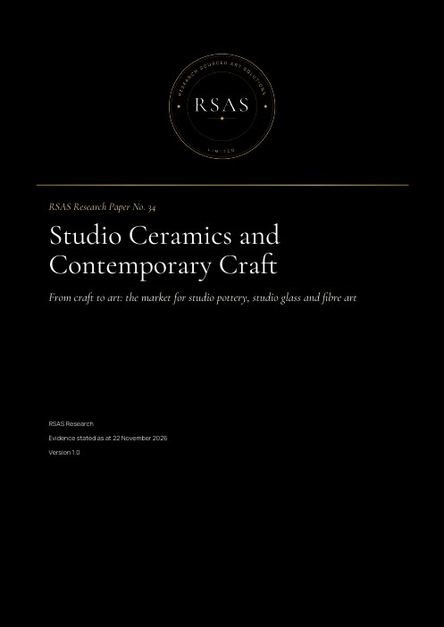
No. 34 · Collecting fields and regions · 19 pagesStudio Ceramics and Contemporary Craft
From craft to art: the market for studio pottery, studio glass and fibre art
Ceramics, glass and textiles were long ranked below painting and sculpture, but that hierarchy has weakened. A potter has won the Turner Prize, works by Hans Coper, Lucie Rie and Magdalene Odundo have sold for hundreds of thousands of pounds, and a woven work by Olga de Amaral made $3.1 million in 2025. The market remains uneven, with most pieces still selling for hundreds or low thousands. This paper traces British studio pottery from Bernard Leach, the émigré potters Rie and Coper, American studio glass and the rise of fibre art. It explains makers’ marks, why condition and fragility matter, how export controls apply, and how to assess a work.
Related InsightsNo. 54, Studio Ceramics and Contemporary Craft: A Collector's Introduction
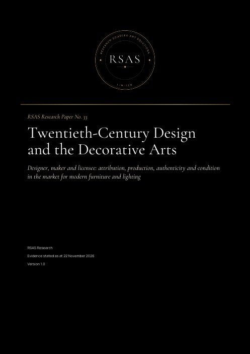
No. 33 · Collecting fields and regions · 21 pagesTwentieth-Century Design
Designer, maker and licensee: attribution, production, authenticity and condition in the market for modern furniture and lighting
Furniture, lighting, glass and metalwork from the twentieth century now form one of the liveliest parts of the art market, with record prices for Eileen Gray and the Lalannes. Most design was made to be produced, often by firms other than the designer, and many classic pieces are still made under licence. The same chair may exist as a prototype, a lifetime example, a later run, a licensed reissue, a replica or a fake, with values a thousandfold apart. This paper explains how the market developed and trades, the forgery cases, the importance of original finish, heritage and export questions, the effect of copyright on replicas, and what to ask before buying.
Related InsightsNo. 53, Collecting Twentieth-Century Design: Originals, Reissues and Condition
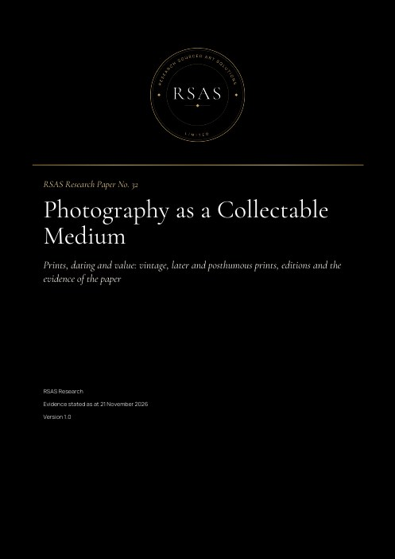
No. 32 · Collecting fields and regions · 23 pagesPhotography as a Collectable Medium
Prints, dating and value: vintage, later and posthumous prints, editions and the evidence of the paper
In photography the same image can exist as many objects, each with a different value. A print made by the photographer soon after exposure and one made decades later, or after the photographer’s death, can differ in price by a factor of a hundred or more. This paper traces how photography became a collected art from the 1970s and explains the vocabulary of the field: vintage, later and posthumous prints, editions and the main processes. It shows how specialists date a print from its paper, markings and physical character, and what the forgery cases of the 1990s taught the market. Its central message is that a buyer is buying an object, not an image.
Related InsightsNo. 52, Vintage, Lifetime and Posthumous Prints: Why the Date of a Photograph Matters
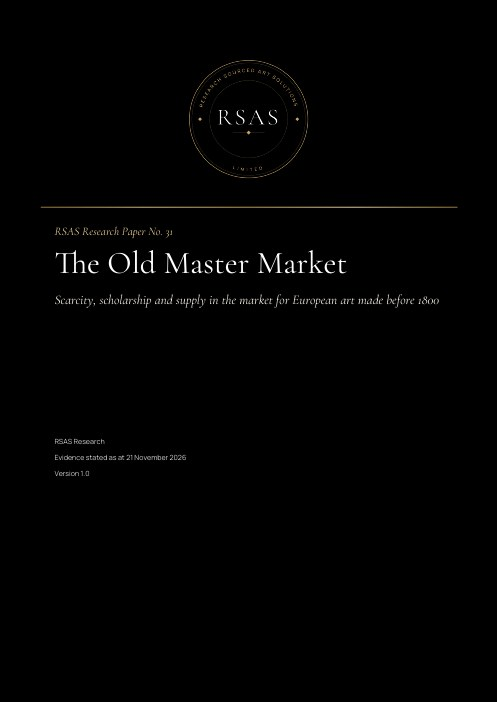
No. 31 · Collecting fields and regions · 23 pagesThe Old Master Market
Scarcity, scholarship and supply in the market for European art made before 1800
The Old Master market is the oldest part of the art trade, and its supply cannot grow: every work was made centuries ago, many of the best are in museums, and more leave private hands each year. This paper explains how the market works, from its size and shape to the dealers, auctions and fairs through which works change hands. It examines the four forces that most affect price: scholarship, condition and restoration, rediscovery, and the demand of museums and states. It shows how concentrated value is, why knowledge is the main source of profit and loss, and what a private buyer should ask before acquiring an Old Master work.
Related InsightsNo. 51, Collecting Old Master Paintings: Supply, Scholarship and Condition
 No. 30 · Collecting in practice · 7 pages
No. 30 · Collecting in practice · 7 pagesBuilding a Legacy Collection
Purpose, records and the routes by which a collection can outlast its first owner
Many private collections are dispersed soon after their creator’s death. This paper explains how to build a collection that can last: give it a clear purpose, document it to museum standards and plan its future in good time. It compares the main routes to a legacy: keeping the collection in the family, selling it for a philanthropic purpose as the Paul G. Allen estate did, giving works to public collections through the UK’s Cultural Gifts and Acceptance in Lieu schemes or Spain’s patronage incentives, and founding a private museum. It closes with practical first steps any collector can take.
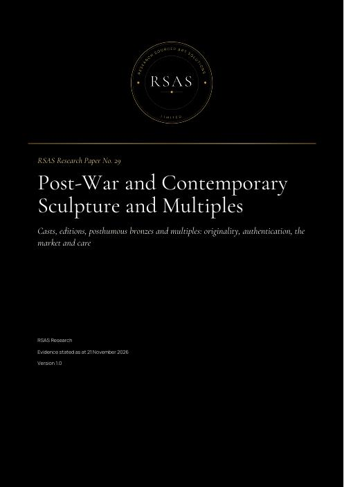
No. 29 · Collecting in practice · 8 pagesPost-War and Contemporary Sculpture and Multiples
Casts, editions, posthumous bronzes and multiples: originality, authentication, the market and care
In sculpture, “original” often means one of several. A bronze may exist in eight identical casts, a cast made after the artist’s death may still be authorised, and a multiple in an edition of a hundred may be a serious work by a major artist. This paper explains the European rule of eight, the Musée Rodin’s posthumous editions, and the multiples of Daniel Spoerri’s Edition MAT and Joseph Beuys. It reviews record prices for Giacometti, Koons and Bourgeois, the lessons of the Mainz Giacometti fakes case, and the practical demands of owning sculpture, especially outdoors and near the sea.
 No. 28 · Collecting in practice · 8 pages
No. 28 · Collecting in practice · 8 pagesThe Southern Iberian Collector Corridor
Institutions, markets, tax and the frontier from Seville and Málaga to Sotogrande and Gibraltar
From Seville through Málaga and Marbella to Sotogrande and Gibraltar, southern Spain has become one of Europe’s most interesting regions for private collectors. This paper describes its institutions, from Seville’s historic collections to Málaga’s Picasso, Carmen Thyssen and Centre Pompidou museums, Marbella’s print museum and fairs, and Gibraltar’s own gallery. It then sets out the rules collectors most need to know: Spanish VAT on art, Andalucía’s wealth tax relief, Spanish export licences, and the EU and UK treaty on Gibraltar, which since 15 July 2026 has introduced a transaction tax with a reduced 5 per cent rate for works of art.
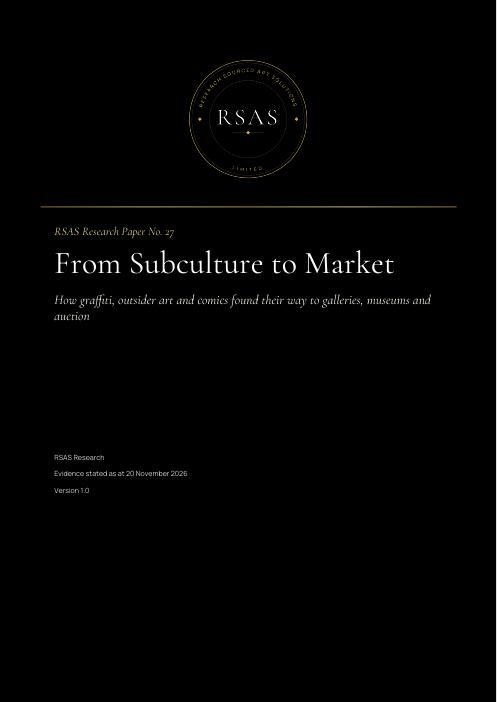
No. 27 · Value, pricing and markets · 9 pagesFrom Subculture to Market
How graffiti, outsider art and comics found their way to galleries, museums and auction
Some of the most valuable art of the last fifty years began far from the art world: on subway trains and city walls, in psychiatric hospitals and isolated homes, and in comics and streetwear. This paper traces how graffiti and street art, outsider and self-taught art, and comic and toy-related art reached galleries, museums and auction rooms, from 1980s New York and Jean Dubuffet’s art brut to Banksy, Bill Traylor, Hergé and KAWS. It then sets out the risks for collectors: authentication controlled by a single body, works removed from walls without clear ownership, intellectual property disputes, large print editions and hype-driven prices.
 No. 26 · Collecting in practice · 9 pages
No. 26 · Collecting in practice · 9 pagesModernism in Gibraltar and the Campo
Artists, institutions and collecting across the bay, from Bacarisas to Pérez Villalta
Gibraltar and the Spanish towns around the bay produced a remarkable group of modern artists whose careers crossed the frontier and the Strait. This paper introduces Gustavo Bacarisas, the Gibraltarian who designed the poster for Seville’s 1929 Ibero-American Exposition; the heritage artists of the Mario Finlayson National Art Gallery; José Cruz Herrera of La Línea; the sculptor Luis Ortega Brú of San Roque; and Guillermo Pérez Villalta of Tarifa. It describes the National Gallery and the Gibraltar International Art Exhibition, and sets out what collectors should know about provenance, documentation, liquidity and conservation in a largely local market.
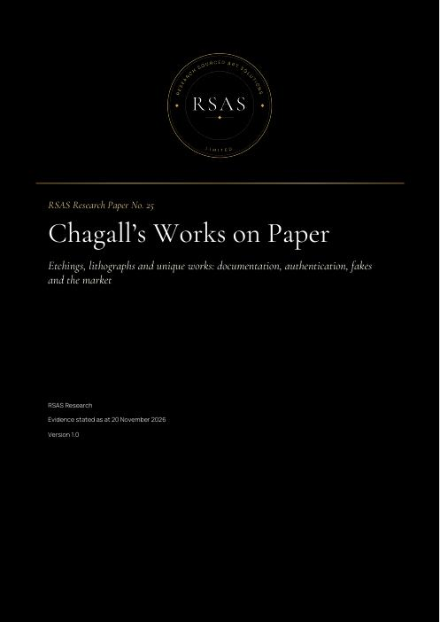
No. 25 · Provenance, authenticity and attribution · 10 pagesChagall’s Works on Paper
Etchings, lithographs and unique works: documentation, authentication, fakes and the market
Marc Chagall is one of the most widely collected artists on paper, and one of the most faked and misdescribed. This paper describes his main bodies of work on paper, from the etchings for Ambroise Vollard to the colour lithographs printed at Mourlot, and the catalogues raisonnés that record them. It explains the crucial difference between prints by Chagall and lithographs made after his work by Charles Sorlier, the role of the Comité Marc Chagall in authenticating unique works and destroying fakes, and the court cases over fake prints. Buyers should rely on catalogue numbers and certificates, not signatures alone.
 No. 24 · Collecting in practice · 10 pages
No. 24 · Collecting in practice · 10 pagesArt in Corporate and Hospitality Settings
Why businesses display art, buying or renting, tax, care and the rental agreement
Art hangs in boardrooms, banks, hotel lobbies, restaurants and private clubs, where it can express identity, impress clients and improve working spaces. This paper examines why businesses display art, what research says about its effect on people at work, and how leading corporate collections and art-led hotels use it. It explains renting art as an alternative to buying, how rental differs from leasing and finance, and the UK tax treatment of each. It also covers the particular risks of busy buildings, from crowds and cleaning to light and heat, and the insurance, security and contractual points every business should address.
Related InsightsNo. 08, Buying or Renting Art for a Hotel
 No. 23 · Condition, care and risk · 11 pages
No. 23 · Condition, care and risk · 11 pagesFine Art Insurance and Risk
Valuation, cover, exclusions, transit, loans and title
Many collections are insured on the wrong terms or for the wrong amounts. Ordinary home contents policies often cap what they pay for a single item far below the value of a serious work. This paper explains how specialist fine art policies work, including all-risks cover and agreed value, and why valuations must be kept up to date. It sets out the usual exclusions, such as gradual deterioration, inherent vice and damage during restoration, notes that industry figures suggest half or more of claims arise in transit and handling, and explains how title risk is handled separately. It closes with practical lessons and a checklist.
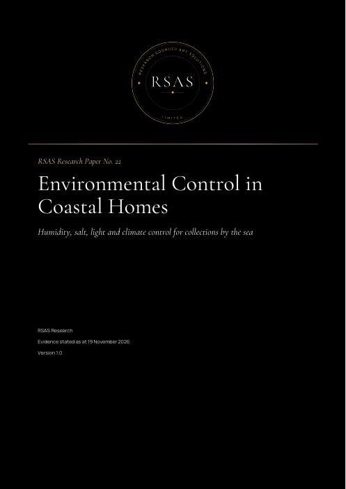
No. 22 · Condition, care and risk · 11 pagesEnvironmental Control in Coastal Homes
Humidity, salt, light and climate control for collections by the sea
Many collectors keep art in homes by the sea, where high and changeable humidity, salt air, strong sun and long closed periods all pose risks. This paper summarises what conservation guidance says about each. It explains why damp is the main threat, with mould likely within days at high humidity, how sea salt accelerates corrosion of metals, and why air conditioning switched on and off can crack paint and distort panels. The practical measures are well established: keep relative humidity between about 40 and 60 per cent, avoid sudden changes, keep works out of direct sun and monitor conditions. It closes with a checklist for owners.
 No. 21 · Condition, care and risk · 12 pages
No. 21 · Condition, care and risk · 12 pagesModern and Contemporary Materials
Acrylics, plastics, photographs, media and the question of replacement
Modern artists use materials that traditional conservation was never designed for: acrylics, plastics and foams, colour photographs and digital prints, video and electronic equipment, and deliberately short-lived matter. This paper explains how these materials age, identifies the four plastics most at risk in collections and shows why colour photographs can fade even in the dark. It explains that time-based media depend on equipment that will become obsolete, and that in conceptual and installation art the certificate and the artist’s instructions may matter as much as the object. It closes with the questions to ask before acquiring a modern or contemporary work.
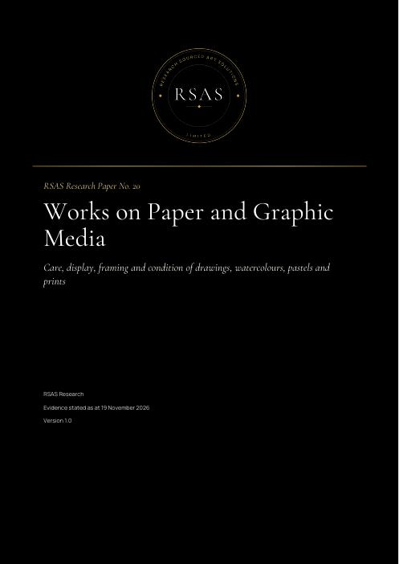
No. 20 · Condition, care and risk · 14 pagesWorks on Paper and Graphic Media
Care, display, framing and condition of drawings, watercolours, pastels and prints
Drawings, watercolours, pastels and prints are among the most rewarding works to own and among the most vulnerable. Light, humidity, heat, acidic materials, pests and handling can all cause damage that cannot be undone. Drawing on guidance from the Canadian Conservation Institute, the Library of Congress, the National Trust and others, this paper sets out the essentials of care: low light with ultraviolet excluded, limited display, moderate and stable humidity, acid-free mounting and minimal handling. It describes common problems from fading and foxing to mat burn, explains what to check before buying and closes with a care checklist for owners.
 No. 19 · Condition, care and risk · 25 pages
No. 19 · Condition, care and risk · 25 pagesThe Comprehensive Condition Report
Standards, terminology and diagnostic protocols for pre-acquisition inspection
A condition report may be only a page or two, yet it can be one of the most important documents in a purchase. It affects price, terms of sale, future care, insurance and the owner’s position if damage is later disputed. This paper argues that “good condition” is too vague to rely on and recommends assessing appearance, stability and how much of the original survives as separate questions. It explains why every report should state its scope and limits, why no single technique is enough and how a free condition note differs from an independent report. It offers a three-tier inspection model and a model report outline.
Related InsightsNo. 19, Condition Reports: What They Cover and When You Need One
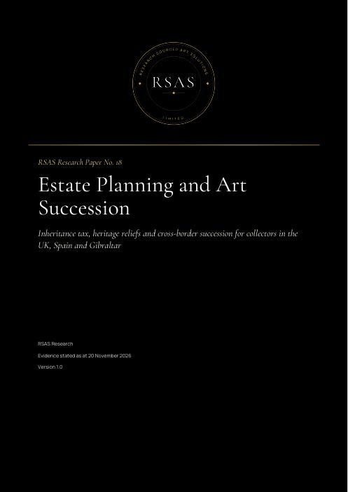
No. 18 · Law, regulation and tax · 11 pagesEstate Planning and Art Succession
Inheritance tax, heritage reliefs and cross-border succession for collectors in the UK, Spain and Gibraltar
A collection built over a lifetime can be broken up in months without a plan. This paper explains the main succession rules for collectors with links to the United Kingdom, Spain and Gibraltar. It covers UK inheritance tax and the move to a residence-based system in April 2025, lifetime gifts, and the heritage schemes of conditional exemption, Acceptance in Lieu and the Cultural Gifts Scheme. It then explains the EU Succession Regulation, Spanish forced heirship and inheritance tax, Andalucía’s family relief and Gibraltar’s absence of inheritance tax. It stresses up-to-date inventories, wills that work in each country and early planning.
 No. 17 · Law, regulation and tax · 10 pages
No. 17 · Law, regulation and tax · 10 pagesFiduciary Duties, Conflicts and Advisory Ethics
Agents and principals, secret profits, auction conflicts and the questions every collector should ask
Most collectors buy and sell through dealers, auction houses and advisers, but whether those intermediaries owe strict duties of loyalty depends on whether they act as agents or on their own account. This paper explains fiduciary duties under English law, including the duty not to make a secret profit, through leading cases such as Accidia v Dickinson over a Leonardo drawing and a New York dispute over a Basquiat. It examines the conflicts built into auctions, including guarantees and irrevocable bids, the Philbrick fraud and the market’s voluntary codes. The lesson is to agree in writing at the outset how an intermediary acts and is paid.
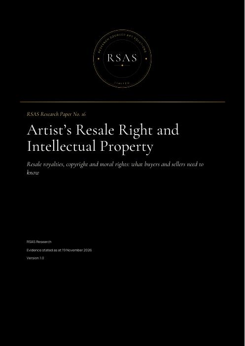
No. 16 · Law, regulation and tax · 10 pagesArtist’s Resale Right and Intellectual Property
Resale royalties, copyright and moral rights: what buyers and sellers need to know
Buying a painting means buying the object, not the rights in it. This paper explains what owners need to know about the artist’s resale right, the royalty paid to artists and their heirs when a work is resold through the art market, in the United Kingdom, the European Union and Spain, and its position in Gibraltar and the United States. It sets out the rates, thresholds and cap, who pays and who collects, and an enforcement case against a London dealer. It then explains how copyright and moral rights affect an owner who wants to photograph, publish, lend or sell a work.
Related InsightsNo. 10, Artist's Resale Right Explained for Buyers
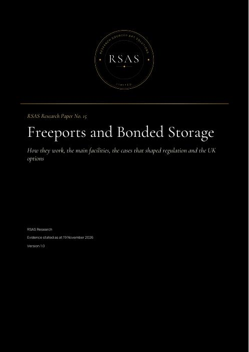
No. 15 · Law, regulation and tax · 10 pagesFreeports and Bonded Storage
How they work, the main facilities, the cases that shaped regulation and the UK options
Freeports and bonded warehouses allow works of art to be stored without paying import duties and VAT until they enter a domestic market. This paper explains how these facilities work and describes the leading art freeports in Geneva, Luxembourg and Singapore. It reviews the cases that brought them under scrutiny, from the Bouvier and Rybolovlev dispute to the Modigliani seized after the Panama Papers, and sets out how regulation has tightened, including anti-money laundering rules for freeport operators and, from 2027, EU customs warehouses. It also explains the UK alternatives and why transparency about ownership is now expected.
 No. 14 · Law, regulation and tax · 11 pages
No. 14 · Law, regulation and tax · 11 pagesCross-Border Movement of Art
Export licences, import controls, VAT, protected materials and the Gibraltar frontier
Works of art cross borders constantly, for sale, exhibition or a move of home, and each journey can engage export licences, import rules and taxes. This paper explains the main requirements for moving art between the United Kingdom, the European Union and beyond, with particular attention to Spain and Gibraltar. It covers UK export licensing and the delay for national treasures, the EU licensing system and its new import controls from June 2025, Spain’s permit for objects over 100 years old, import VAT, temporary admission and the UK ivory ban. The lesson is to plan ahead, obtain licences before shipping and keep every document.
 No. 13 · Law, regulation and tax · 10 pages
No. 13 · Law, regulation and tax · 10 pagesAML in the Art Market
Money laundering risks, the UK, EU, Spanish, Gibraltar and US rules, sanctions and what customers should expect
High values, portable assets and a tradition of discretion make art attractive to those seeking to launder money or evade sanctions. This paper explains how anti-money laundering rules now apply to the art trade. In the United Kingdom, dealers and intermediaries handling transactions of £10,000 or more must register with HMRC, check their customers and report suspicions and sanctions breaches. It also covers Spain, the new EU regulation that will apply from July 2027, Gibraltar’s parallel regime and the different position in the United States. For buyers and sellers, identity and source-of-funds checks are now a legal requirement, not a courtesy.
Related InsightsNo. 20, Why Your Art Adviser Asks for Identification: Anti-Money Laundering in the Art Market
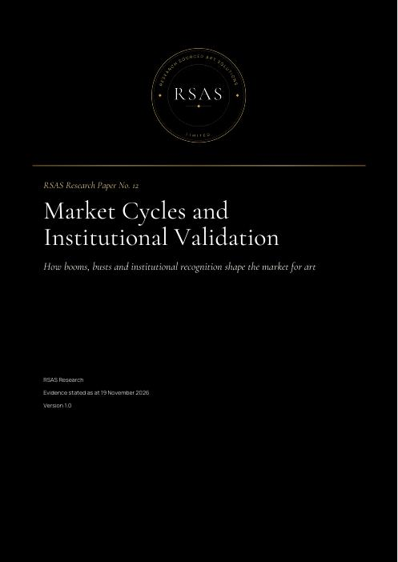
No. 12 · Value, pricing and markets · 14 pagesMarket Cycles and Institutional Validation
How booms, busts and institutional recognition shape the market for art
Two forces shape the market for any artist: the cycle of the art market as a whole and the judgements of museums, curators, biennales and prize juries. This paper traces the major contractions of the past thirty-five years, from the 62 per cent fall in auction sales in 1991 to the declines of 2023 and 2024, and links them to equity markets, wealth and speculation. It then examines institutional validation, showing that early museum recognition shapes careers for decades but that exhibitions often have their effect on prices before they open. Timing, venue and the supply of work all matter.
 No. 11 · Value, pricing and markets · 14 pages
No. 11 · Value, pricing and markets · 14 pagesArt and Financial Return
What the evidence shows
Is art a good investment? This paper sets popular claims against the academic evidence, from William Baumol’s 1986 study to recent work on selection bias and on the collection of John Maynard Keynes. Long-run studies estimate real returns of roughly 0.5 to 5 per cent a year before costs, and correcting for the tendency of successful works to be resold lowers measured returns further. The paper explains why averages mislead: a few works drive most gains, auction fees can require a large rise in price simply to break even, and indices omit private sales and cannot be bought. The financial case for art is weaker than headline figures suggest.
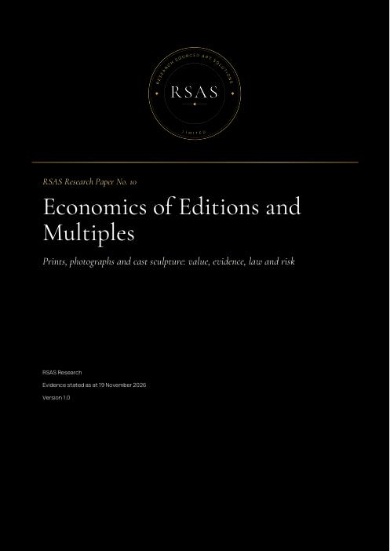
No. 10 · Value, pricing and markets · 14 pagesEconomics of Editions and Multiples
Prints, photographs and cast sculpture: value, evidence, law and risk
Prints, photographs, cast sculpture and other multiples are often a collector’s first purchase, but their economics differ from those of unique works. This paper explains what drives the value of an edition, from the image and the impression to condition and the depth of the artist’s market, and why the number of a print matters less than many suppose. It reviews research showing modest long-run returns on prints, explains how French, European and New York rules define an original multiple, and shows through the Eggleston case how a later edition can lawfully follow. It closes with a due diligence checklist for buyers.
Related InsightsNo. 14, Editions, Prints and Multiples: How Edition Size Shapes Price
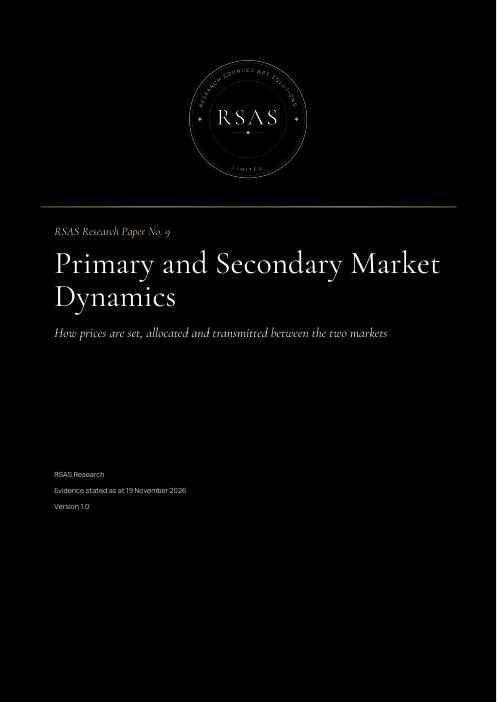
No. 9 · Value, pricing and markets · 15 pagesPrimary and Secondary Market Dynamics
How prices are set, allocated and transmitted between the two markets
The art market works as two linked markets. In the primary market, galleries sell new work at prices they set and to buyers they choose; in the secondary market, works are resold through auctions and dealers at prices that can rise or fall in public. This paper explains how the two interact and why their prices can diverge. It shows how waiting lists, price stickiness and support at auction can make primary prices look steadier than they are, and why price rises pass between the markets more readily than falls. It closes with a comparison of buying in each market and questions every buyer should ask.
Related InsightsNo. 12, Primary and Secondary Markets: What the Difference Means for a Buyer
 No. 8 · Value, pricing and markets · 27 pages
No. 8 · Value, pricing and markets · 27 pagesPrivate Sale and Public Auction
Price realisation, anonymity, burned works and transaction costs
Choosing between auction and private sale is often presented as a matter of temperament. This paper shows that the real differences lie in how a price is discovered, who carries the risk of failure, what each party pays, what becomes public and what remedies exist. It finds no reliable evidence that either route achieves higher prices, measures the gap created by auction buyer’s premiums, and explains guarantees, anonymity and the risk of an intermediary whose role and pay are unclear, as in the Accidia case. It offers a net proceeds model, a framework for choosing a route and a checklist for private sale mandates.
Related InsightsNo. 07, Selling a Work of Art: Auction, Private Sale or Consignment
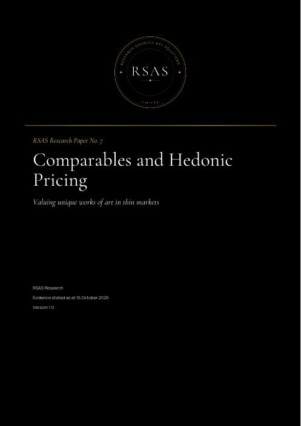
No. 7 · Value, pricing and markets · 26 pagesComparables and Hedonic Pricing
Valuing unique works of art in thin markets
What is a work of art worth when nothing identical has ever sold? This paper examines the two main answers: the comparable sale, where a specialist adjusts for differences between similar works, and the hedonic model, where statistics estimate what the market pays for each characteristic. It sets these beside repeat-sales analysis, auction estimates and machine learning. It shows that public auctions represent only about a third of sales by value, that models explain market patterns better than single prices, and that unsold works distort the record. It proposes a six-stage method for valuing a work in a thin market and expressing the result as a reasoned range.
 No. 6 · Value, pricing and markets · 18 pages
No. 6 · Value, pricing and markets · 18 pagesAssessing Emerging Artists
An evidence framework for buyers
Buying the work of an emerging artist is where enthusiasm most often runs ahead of evidence. Prices are set by galleries, resale records are thin and reputations are still forming. This paper reviews the research on artistic careers, which shows that early access to leading institutions matters greatly and that most artists never develop a resale market. It sets the sharp rise and fall of the ultra-contemporary auction market between 2021 and 2025 against that background. Rather than claiming to predict success, it shows buyers which signals carry weight and how to organise the evidence before committing to a purchase.
 No. 5 · Provenance, authenticity and attribution · 18 pages
No. 5 · Provenance, authenticity and attribution · 18 pagesFakes, Forgeries and Misattribution
How inauthentic works enter the market, how they are detected and what remedies exist
Every buyer faces the possibility that a work is not what it is said to be, whether through deliberate forgery, later alteration or an honest mistake. This paper examines how such works enter the market, how they are detected and what remedies exist, drawing on the Drewe and Myatt fraud, the Beltracchi forgeries, the Knoedler sales, the Genoa Modigliani exhibition and current proceedings in Paris. It explains why there is no reliable estimate of how many fakes exist, why false stories and documents matter more than skilful painting, and why English sale law protects buyers less than many assume. Provenance research remains the first line of defence.
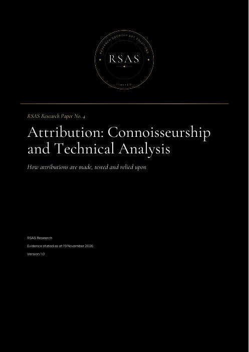
No. 4 · Provenance, authenticity and attribution · 20 pagesAttribution: Connoisseurship and Technical Analysis
How attributions are made, tested and relied upon
The same painting can be worth thousands as the work of a follower and millions as the work of a master. This paper explains how attributions are reached from documents, trained connoisseurship and scientific analysis, and how far each can be trusted. It shows what terms such as “attributed to” and “circle of” mean for value and for a buyer’s rights, traces how the accepted number of Rembrandt paintings has risen and fallen, and explains why technical analysis is better at disproving an attribution than proving one. It also considers artificial intelligence and sets out what English law expects of auction houses when experts later disagree.
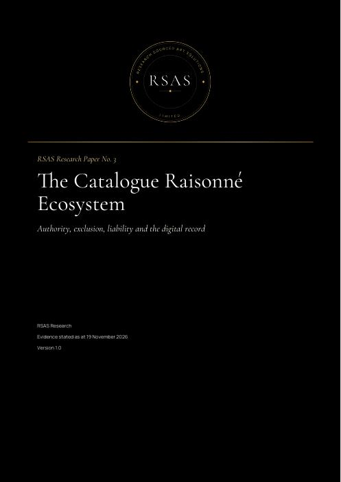
No. 3 · Provenance, authenticity and attribution · 23 pagesThe Catalogue Raisonné Ecosystem
Authority, exclusion, liability and the digital record
For many artists, one publication decides whether a work can be sold at full value. This paper examines the catalogue raisonné: what it contains, who compiles it and how it became the market’s practical test of authenticity. It reviews research suggesting that inclusion carries a substantial price premium, shows how a single expert’s catalogue can move a whole market, and explains why several leading artists’ foundations have stopped authenticating after costly litigation. It compares the legal position of catalogue authors in New York and France, notes that forgeries have entered catalogues, and considers what digital catalogues mean for buyers who need to know which version they are relying on.
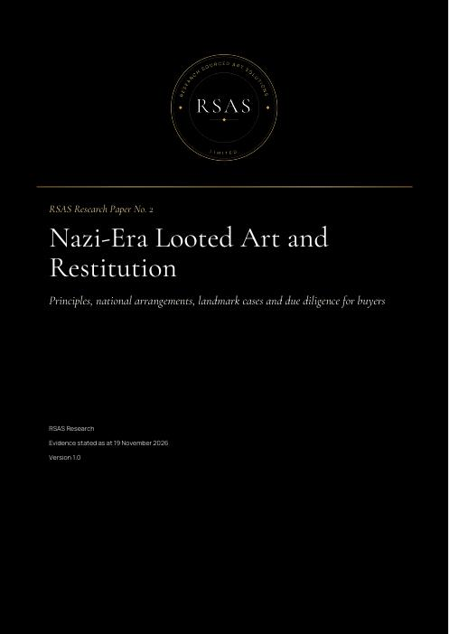
No. 2 · Provenance, authenticity and attribution · 13 pagesNazi-Era Looted Art and Restitution
Principles, national arrangements, landmark cases and due diligence for buyers
Between 1933 and 1945 the Nazi regime confiscated, looted or forced the sale of cultural property on a vast scale, and works with gaps in their history for those years still surface today. This paper explains the international principles, from the 1998 Washington Principles to the 2024 Best Practices, and how claims are now handled in the United Kingdom, Germany, France and the United States, including Germany’s new arbitration body and the permanent US time limit for claims. Three landmark cases, concerning Klimt, the Gurlitt trove and a Pissarro in Madrid, show how long such disputes can run. It closes with practical steps for buyers and owners.
 No. 1 · Provenance, authenticity and attribution · 27 pages
No. 1 · Provenance, authenticity and attribution · 27 pagesThe Anatomy of Provenance
Methods for tracing ownership and title through European private collections, 1900 to the present
Provenance is more than a list of former owners. This paper treats it as a chain of separate claims, each of which can be tested and each of which may carry different legal consequences depending on where a work was when it changed hands. It explains why provenance and good title are not the same thing, why the location of a work at each sale matters, and how uneven the research records are, especially for Spain after 1945. Drawing on the Drewe, Beltracchi and Knoedler frauds, it offers five questions for every link in the chain, a five-level scale for grading evidence and a checklist to use before buying.
Related InsightsNo. 05, Provenance: The Questions to Ask Before You Buy